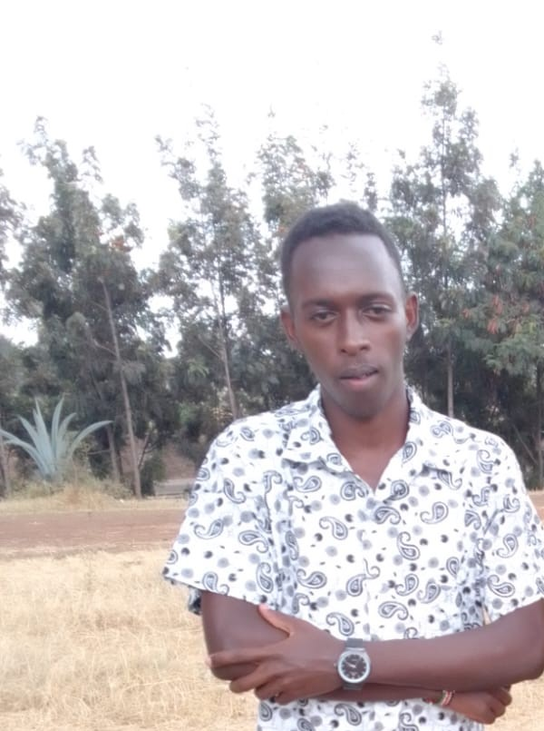

My Childhood Journey
Early Years (2002-2008)
I was born in a machakos county, kalama village where I spent my early years surrounded by nature and a close-knit community. These formative years shaped my curiosity and love for exploration.


Elementary School (2008-2016)
My elementary school years were marked by discovering my love for reading and science. I participated in my first science congress and won the regional competition with a project about plant growth.
- Developed passion for science and nature
- Joined the school clubs
- Made lifelong friends
Middle School (2017-2020)
These were years of self-discovery and developing personal interests. I joined the swim team and learned the value of discipline and teamwork.
Key Achievements:
- Football team captain (2018-2019)
- Science Olympiad regional finalist
- Published first short story in school magazine